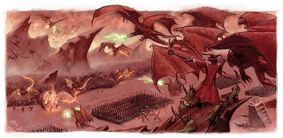
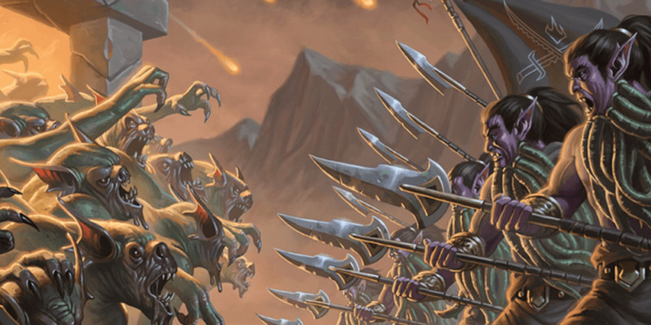

La Guerre de sang
La Guerre de sang est un conflit qui fait rage depuis des millénaires entre les diables et les démons. L'engagement est massif et implique un nombre presque infini de créatures. Concernant l'origine du nom donné à cette guerre, plusieurs théories circulent, mais selon le mage Mordenkainen ce serait en référence aux branches de la rivière Styx qui, telles des veines, serpentent le long des champs de batailles du conflit.
La guerre éternelle
Les causes réelles de cette guerre sont inconnues, mais de nombreux sages pensent qu'il s'agit d'un vestige de la grande guerre de la Loi contre le Chaos, même si les yugoloths aiment entretenir l'idée que ce conflit est le résultat de leurs expériences personnelles sur la nature du mal, et qu'ils en sont donc les instigateurs. Ce qui fait consensus, par contre, est que l'histoire se répète inlassablement. Les démons tentent d'envahir Avernus en suivant la rivière Styx qui relie les Abysses aux Neuf enfers (et à tous les autres plans inférieurs). Mais les diables les repoussent et vont même certaines fois jusqu'à les poursuivre pour livrer des batailles dans les Abysses, avant de devoir faire retraite. De fait, de très nombreux fiélons ont participé ou participent encore à cette guerre. Les yugoloths, pour leur part, en profitent pour gagner richesse et pouvoir en monnayant à prix d'or leurs services.
TERMINÉE OU PAS ?
La Guerre de sang [Blood War] apparaît avec AD&D 2 dans le setting Planescape. Le conflit n'est ensuite que très peu abordé dans D&D 3. Puis dans le Forgotten Realms Campaign Guide de D&D 4, il est mentionné qu'Asmodée, qui a accédé au statut de divinité en absorbant la puissance divine d'Azouth, met fin à cette guerre.
Avec D&D 5, l'épisode de D&D 4 est totalement éclipsé et le Mordenkainen's Tome of Foes indique clairement que la guerre continue et qu'elle ne s'est jamais arrêtée.
Et malgré des millénaires de luttes incessantes, aucun camp n'a jamais été capable d'obtenir un avantage décisif sur l'autre. Bien que beaucoup plus nombreux, les habitants des Abysses, de nature chaotique, entrent trop souvent en conflit entre eux. Les diables, en revanche, déploient de plus petits effectifs sur le terrain, mais leurs légions entraînées et disciplinées, commandées par d'excellents stratèges, réussissent à faire jeu égal avec les démons.
Chaque camp s'emploie bien à constamment envoyer des agents sur tous les plans afin de faire peser durablement la balance de son côté, exportant le conflit sur le plan matériel, ce qui se traduit souvent en luttes entre cultistes, mais cela n'a jusqu'à présent jamais suffit. Les diables recrutent des mortels afin de récupérer leur âme le jour de leur mort, des fiélons sont en quête permanente d'artefacts ou essayent de recruter de puissantes créatures, mais rien n'y fait. Une prophétie dit d'ailleurs que la Guerre de sang ne se terminera que lorsqu'une ville du plan de Géhenne, qui abrite des millions de yugoloths, prendra ouvertement part au conflit.
L'équilibre
Cet équilibre est de plus entretenu par un groupe d'individus, comme le mage Mordenkainen, qui ne voient pas forcément d'un mauvais œil que le conflit perdure et qui n'hésitent pas à utiliser tous les moyens en leur possession, bons ou mauvais, pour maintenir le statu quo. En effet, si un camp parvenait à prendre le dessus sur l'autre et à contrôler l'ensemble des plans inférieurs, le multivers serait en grand danger. Sans autres ennemis face à eux dans les plans inférieurs, les vainqueurs tourneront surement leur attention vers d'autres mondes et plans, et il est alors probable qu'aucune force ne pourrait les arrêter. Même les êtres célestes des plans supérieurs, aussi puissants soient-ils, seraient menacés de destruction par les diables ou les démons.
